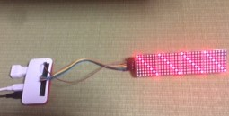
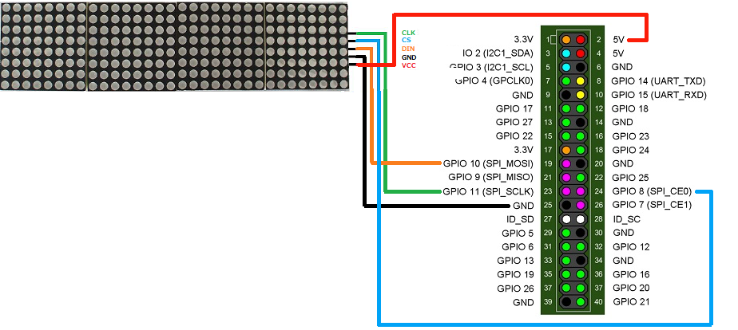
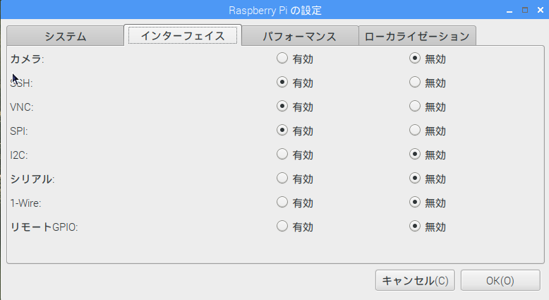

1年ぶりの記事投稿です。
過去2回の記事では8x8 LEDマトリックスをRaspberry PiのGPIO経由で制御しました。
今回は、新たに秋月電子の「MAX7219使用赤色ドットマトリクスLEDモジュール」を使用します。
これは8x8 LEDマトリックスを4つつなげ8x32 LEDマトリックスにしたもので、マキシム社のLEDディスプレイドライバICであるMAX7219を使用したモジュールになっています。
MAX7219に信号を入力することで個別のLEDの点灯制御ができます。
最終的には漢字のスクロール表示を目指しますが、今回の記事ではシンプルに「／／／／」と「＼＼＼＼」を交互に表示することを目指します
また、プログラム言語はC言語(gcc)を使用します。
【2026/03/22補足】現在秋月電子では取り扱っていないようです。他のショップで同様にMAX7219を使用したマトリックスLEDは販売されていますので、そちらを流用してみて下さい。
今回購入したのモジュールは、MAX7219が組み込まれたモジュールになっているため、LEDの各端子を直接制御するのではなく、SPI(Serial Peripheral Interface)という、シリアルインタフェースを使用して制御することになります。
このため、接続に必要な線はわずか5本です。
モジュールに付属しているケーブルで接続できるため、Raspberry Pi側にヘッダピンを立てていれば、ブレッドボードや、半田付けは不要になっています。
接続図を以下に示します。

SPIはクロックと同期してデータを転送するシリアル規格でありIC間のデータ転送に使われます。
類似の規格であるI2Cにくらべ高速にデータが転送できます。
Raspberry Piのコネクタは、標準ではGPIOとして使用しますが、専用ツールによるモード設定により、一部のピンをSPIインタフェース用の信号線に変更することができます。
前述の通り、Raspberry PiでSPI接続するためには、設定を変更する必要があります。
/boot/config.txtの設定で変更できますが、直接編集するのではなく、ツールを使用して変更します。
GUI(Grafical User Interface)画面の左上の「メニュー」ボタンをクリックして、リストの中から「設定」→「Raspberry Piの設定」とクリックします。
「インタフェース」タブを選択し、「SPI」を有効に設定します。

GUIを使えない場合（CLIしか使用できない場合）は、コンソールから「sudo raspi-config」と起動してください。
同様に設定することができます。
Raspberry PiのSPIには複数のライブラリがあるようですが、ネットで調べたところメジャーなwiringPiを使用することにしました。wiringPi自体はGPIOのライブラリですが、SPIも扱うことができます。
wiringPiの説明によると、予めコンソールで、以下のコマンドを実施する必要があります。
私の使用した環境(Raspberry Pi Zero WH)では上記コマンドを実施すると以下のようなメッセージが出てきました。
しかし、実際に後述するプログラムは正常動作したため、環境としてはSPIが使えるようになっていました。
表示内容も「このPiではデバイスツリーが有効になっているため、モジュールをロード/アンロードできない」という内容なので、すでにロード済みで固定していたのかもしれません。
SPIは送受信できますが、本記事では送信についてのみ記述します（LEDマトリックス制御は、データ送信のみであり、受信は行わないため）。
SPIは、バイトデータ(8bit)をシリアルデータ(1bitデータ列)に変換して送信します。
1バイトのデータを送付するとき、そのバイトデータからシリアルへの変換はMSB（Most Significant Bit:上位ビット）ファーストになります。
例えば、0x12という16進数のバイトデータは、2進数では、00010010bと表現できますが、SPI上はMSBから、0,0,0,1,0,0,1,0の順に送信されます。
今回使用するLEDマトリックスは、8行x32列となっていますが、8行x8列のLEDマトリックスが4個連結されています。
各LEDマトリックスの1行は、16bit(2byte)で指定します。
LEDマトリックス(1個)の1行 = ①4bit未使用(0000b) + ②4bitアドレス + ③8bitデータ
①は、0を指定します
②のアドレスは、行を指定します。
LEDマトリックスのマニュアルに記載されているアドレスはLSB Firstで表現されていますので
バイトデータで表現すると以下のようになります。
③のアドレスは、8bitデータを指定します。LEDマトリックスに表示されるビットパターンはMSB/LSBが逆になります
例えば、0x11は、00010001bですが、LEDマトリックスには、■□□□■□□□と表示されます（■が点灯）。
LEDマトリックスのマニュアルには以下の記載があります。
Raspberry Piは、CE信号(LEDマトリックス側のCS信号)が通常Hになっており、送信中(write中）のみLになります。
このため、特に意識して制御を行わなくても自動的に上記１に記載されている「CS信号をL→Hにする」を行うことになります。
ただし、送信(write)のたびにCE信号が、H→L→Hと遷移するため、1行x4回分(16bitx4)を一度にwriteする必要があります。
LEDマトリックスのマニュアルには以下のように記載されおり、事前にMAX7219の初期設定をする必要があることがわかります。
具体的な設定方法について、MAX7219のデータシートを見てもイメージがつかめないため、秋月電子HPにあるArduinoボード用のサンプルソースを参考にします。
サンプルソースコードを読み解くと、以下の初期化処理をしていることが分かりました。今回、同じ初期化処理を行うことにします。
test1.c
赤文字部分が、ライブラリのwiringPiを初期化する箇所です。
wiringPiSPISetup ()は、SPIセットアップを行う関数です。
第1引数は、チャネル番号で、第2引数は、転送レートを指定します。
青部分が、LEDマトリックス（のMAX7219）初期化部分です。
内容は、【６】を参照してください。
緑部分が、LEDマトリックスの描画部分になります。
i=1～8は、アドレス（行）を指しています。
j=0～4は、4個あるLEDマトリックスを指しています。LEDdata[j].datは、各LEDマトリックスの1行分のデータを表しています。
wiringPiSPIDataRW()は、送信、受信を行う関数です。
前述のとおり、送信(write)のたびにCE信号が、H→L→Hと遷移するため、1行x4回分(16bitx4)を一度にwriteしています。
緑部分の処理で、「／／／／」と「＼＼＼＼」を交互に表示されることになります。
本項では、ソースコードのコンパイルと実行について記載します。
まずは、【７】のソースコードをtest1.cとして保存してください。
次に、同じディレクトリに、以下のMakefileを保存してください。
※「-lwiringPi」が、wiringPiライブラリをリンクする指定になります。
lsコマンドで、Makefileとtest1.cがあることを確認してください。
次にmakeコマンドで、コンパイルを実施してください。
lsコマンドで、test1(実行ファイルが)が作成されたことを確認してください。
実行は以下のように入力してください。
実行を止めるときは、[CTRL]+[C]キーを押してください。
【改訂記録】
2019/06/02版：公開
2026/03/22版：リンク切れ修正、補足追加、レスポンシブ対応